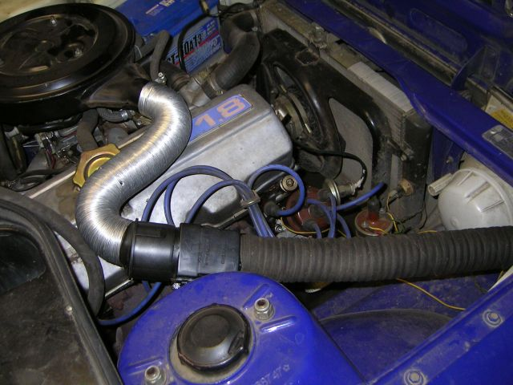
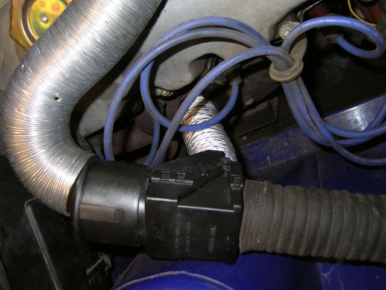

Автоматический терморегулятор.
Очень полезная штука.


Нужно:
- Собственно терморегулятор (автоматический, от 8-ки);
- Гофр с пластмасской от 10-ки (между регулятором и кастрюлей);
- Гофр потоньше (не знаю от чего), идёт к жаровне;
Результат: В холодную погоду машина прогревается быстрее, раньше можно начинать движение.
© AHTOXA, 2005-2006.